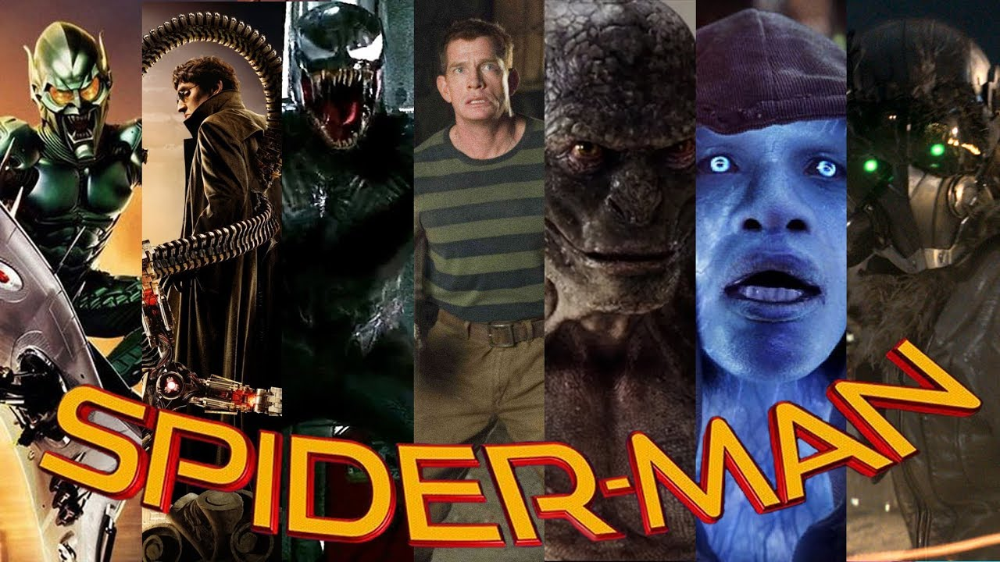

Movie Villians
Villians in Spider-Man Movies

List of Villians in order of when they appear in the movies
- Green Goblin
- Doc Ock
- Sandman
- Venom
- Lizard
- Electro
- Vulture
Green Goblin appears in 2002 Spider-Man. Doc Ock appears in Spider-Man 2. Sandman and Venom appear in the Spider-Man 3. Lizard appears in the Amazing Spider-Man. Electro appears in the Amazing Spider-Man 2. Vulture appears in Spider-Man Homecoming.
The First 3 Movies have Tobey Maguire as the lead actor. The Amazing Spider-Man films star Andrew Garfield. Spider-Man: Homecoming features Tom Holland.

Animated Spider-Man movie villains/antagonists

Kingpin is the main villain in Spider-Man: Into the Spider-Verse. The Spot is the main villain in Spider-Man: Across the Spider-Verse, while Spider-Man 2099 is an antagonist.